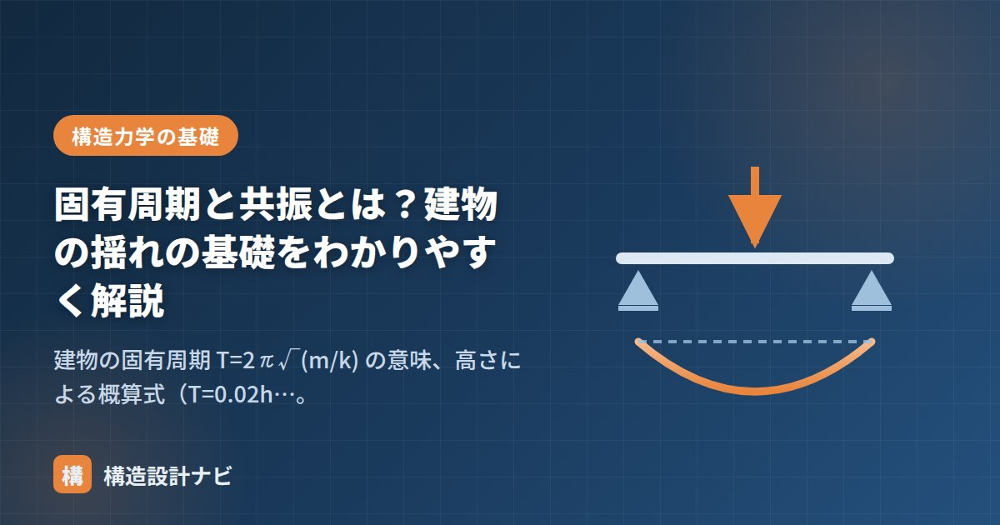

固有周期と共振とは？建物の揺れの基礎をわかりやすく解説

建物にはそれぞれ「揺れやすいリズム」があります。これが固有周期です。地震の揺れのリズムと建物のリズムが一致すると、揺れがどんどん大きくなる共振が起きます。耐震設計・免震設計の根っこにある、振動の基礎を押さえましょう。
固有周期 T とは
建物を横に押して手を離すと、建物は一定のリズムで左右に揺れます。1往復にかかる時間（秒）が固有周期 T です。1質点系（おもり＋バネのモデル）では次式で表されます。
- 重い建物ほど周期が長い（ゆっくり揺れる）。
- 硬い建物ほど周期が短い（小刻みに揺れる）。
- 高い建物ほど柔らかくなるため、高層ほど周期は長い。
建物の高さからの概算式
設計の初期段階では、建物高さ h（m）から固有周期を概算します（建築基準法の略算式）。
共振：リズムが合うと揺れが増幅する
ブランコを押すとき、ブランコの揺れのリズムに合わせて押すと、小さな力でもどんどん大きく揺れます。これが共振です。建物でも同じことが起き、地震動の卓越周期と建物の固有周期が近いと、応答（揺れ）が数倍に増幅されます。
- 1985年メキシコ地震：軟弱地盤の卓越周期（約2秒）と中高層建物の周期が一致し、10〜15階建てに被害が集中した。
- 長周期地震動：巨大地震では周期2〜10秒のゆっくりした揺れが遠方まで伝わり、固有周期の長い超高層ビルだけが大きく長時間揺れる。2011年東北地方太平洋沖地震では大阪の超高層が大きく揺れた。
設計への応用：周期を「ずらす」「吸収する」
- 免震：積層ゴムで建物の周期を3〜5秒に伸ばし、一般的な地震動の卓越周期（0.1〜1秒程度）から外す。「耐震・制震・免震の違い」参照。
- 制震：共振しても揺れのエネルギーをダンパーで吸収し、増幅を抑える（減衰を増やす）。
- 地盤との相性：硬い地盤は短周期、軟弱地盤は長周期の揺れが卓越する。軟弱地盤×長周期の建物は共振リスクが高く、基準法でも地盤種別（第1種〜第3種）に応じて設計用地震力が変わる。
振動の基礎用語ミニ整理
| 用語 | 意味 |
|---|---|
| 固有周期 T | 建物が1往復揺れるのにかかる時間（秒） |
| 固有振動数 f | 1秒あたりの往復回数。f = 1/T（Hz） |
| 卓越周期 | 地震動・地盤で最も強く現れる揺れの周期 |
| 減衰 | 揺れが自然に小さくなっていく性質。ダンパーで増やせる |
| 1次・2次モード | 揺れ方の形。1次は全体が同方向、高次はくねるように揺れる |
略算式T≒0.02h・0.03hはあくまで初期検討用の目安で、実際の固有周期は保有水平耐力計算時の固有値解析で確定します。略算値と解析値が大きくずれるときは、袖壁や垂れ壁を剛性にどう反映させているかなど、モデル化の前提を疑うようにしています。
共振で揺れが増幅する仕組み（図解）
共振がなぜ危険なのか、地震動の周期と建物の周期の関係をグラフで見てみましょう。
グラフの山が示すように、周期が一致した状態では、揺れが数倍に増幅されます。これを避ける方法は2つあります。①周期をずらす（免震）か、②減衰を増やして山そのものを低くする（制震）かです。制震ダンパーが「揺れを吸収する」といわれるのは、この減衰を人為的に増やしていることを指します。
減衰とは何か
減衰は、揺れのエネルギーが熱などに変わって失われ、振動が徐々に収まっていく性質です。減衰が大きいほど、揺れは早く止まります。
| 建物の種類 | 減衰定数の目安 | 揺れの収まり方 |
|---|---|---|
| 鉄骨造（S造） | 約2% | 揺れが長く続きやすい |
| 鉄筋コンクリート造（RC造） | 約3〜5% | S造より早く収まる |
| 制震装置を設けた建物 | 10〜20%程度 | 大幅に早く収まる |
| 免震建物 | 20〜30%程度（免震層） | ゆっくり揺れて短時間で収まる |
RC造がS造より減衰が大きいのは、コンクリートのひび割れや内部摩擦がエネルギーを消費するためです。S造の建物が「揺れを感じやすい」といわれるのは、剛性が低いことに加えて、減衰が小さく揺れが長引くことにも理由があります。制震ダンパーがS造の超高層で多用されるのは、この小さい減衰を人為的に補う意味があります。
よくある質問
Q1. 固有周期が長いほうが地震に有利なのですか？
一般的な地震動に対しては有利です。日本の内陸型地震の主要な周期成分は0.1〜1秒程度なので、建物の周期がそれより長ければ共振を避けられ、建物に作用する加速度（＝地震力）も小さくなります。基準法のRtが周期の長い建物ほど小さくなるのはこのためです。ただし、周期2〜10秒の長周期地震動に対しては、超高層や免震建物のほうがむしろ共振しやすくなるため、一概に有利とは言えません。
Q2. 同じ高さの建物でも固有周期が違うことはありますか？
あります。固有周期は質量と剛性で決まるため、同じ高さでも構造種別や耐震壁の量によって変わります。壁の多いRC造は硬く周期が短くなり、柱と梁だけのS造ラーメンは柔らかく周期が長くなります。基準法の略算式でRC造をT＝0.02h、S造をT＝0.03hと分けているのは、この違いを反映したものです。
Q3. 建物の固有周期は実際に測れるのですか？
測れます。常時微動測定という方法で、地面や建物が常に受けているごくわずかな振動（交通振動や風など）を高感度の測定器で記録し、その周波数成分を分析することで固有周期を求めます。耐震診断や、大地震後の建物の健全性確認にも用いられ、設計時の想定値と実測値を比較することで、建物の剛性が想定どおりかを検証できます。
まとめ
- 固有周期は建物固有の揺れのリズム。T = 2π√(m/k)。重いほど長く、硬いほど短い。
- 概算は RC造 T≒0.02h、S造 T≒0.03h。高層ほど周期が長い。
- 地震動の卓越周期と一致すると共振して揺れが増幅。免震は「周期をずらす」、制震は「減衰を増やす」技術。